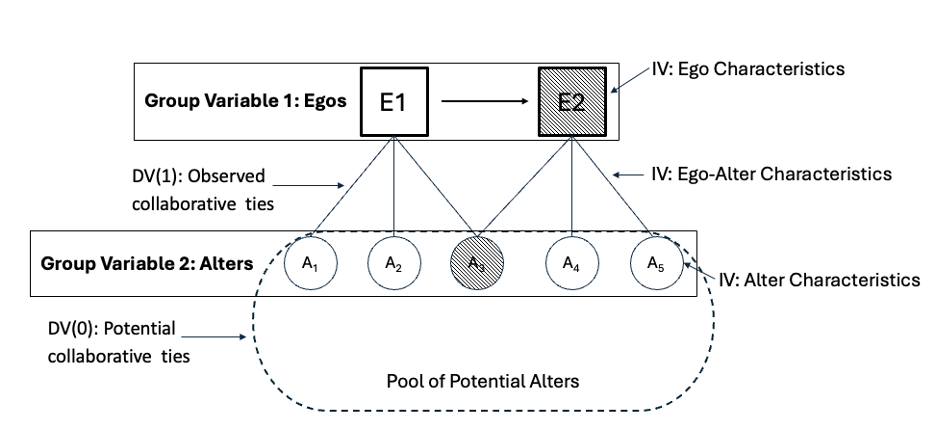

Environmental Justice

Effective climate solutions are ones that prioritize the safety and resilience of everyone, particularly low income communities, communities of color, and Tribal communities. My work examine ways government agencies and nonprofit organizations can support the goals of EJ communities. Some questions I am particularly interested in:
What factors are most important for successful EJ partnerships?
Which collaborative governance processes meaningfully involve and benefit EJ communities?
How can EJ efforts be scaled up while meeting community- and place-specific needs?
Related Outputs

Leveraging Partnerships in the Environmental Justice Movement: A Case Study in the California Delta

Developing a Theory of Change for Integrating Equity into Climate Change Graduate Education.
No matching items